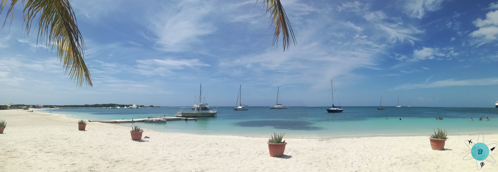
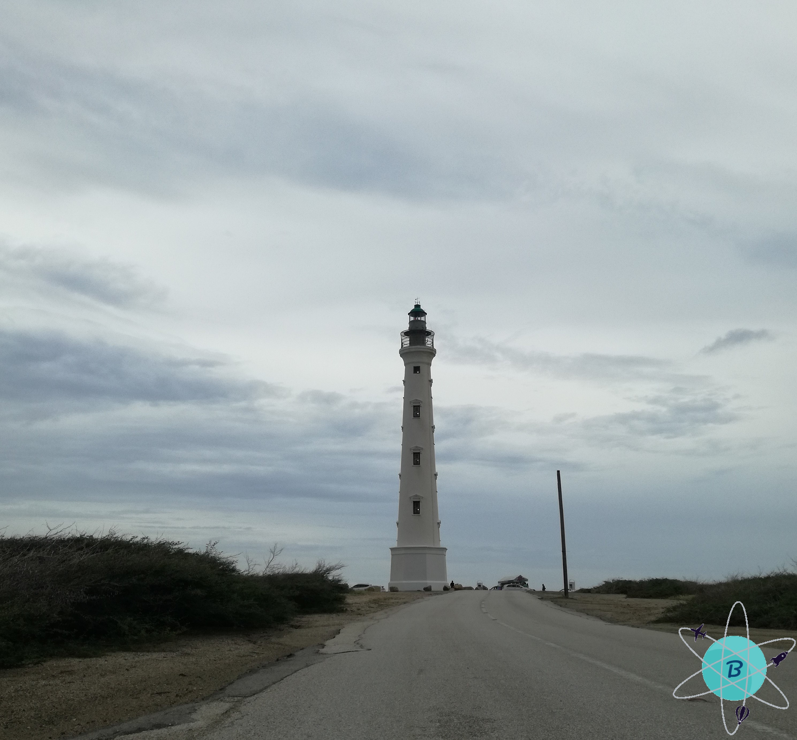
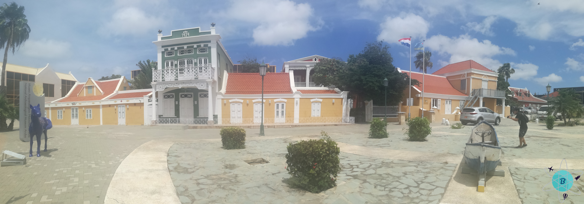
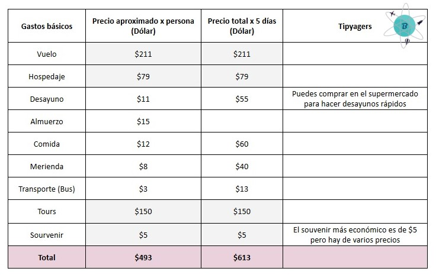

Aruba
01.01.2018
Fue un viaje inesperado ya que estábamos buscando un destino con playa, pero no teníamos en mente el lugar, averiguamos en diferentes aerolíneas muchos destinos hasta que encontramos un vuelo económico para Aruba desde Bogotá, después de comprar los vuelos iniciamos nuestra búsqueda del hospedaje al validar vimos que la mejor zona para la estadía está en Oranjestad.

Nuestra primera visita al llegar fue Surfside Beach, una playa donde casi no hay olas, el agua es calmada y es ideal para descansar bajo la sombra de los árboles kwihi, allí se logra observar el aterrizaje de los aviones y cuando llegan los cruceros; alrededor hay bares y restaurantes y podrás ver la carta de los diferentes platos y bebidas internacionales, también existe un parque acuático flotante para los niños.
Antes de ingresar a la playa uno transita por la Plaza Turismo, ahí se encuentra un colorido letrero de Aruba donde te puedes tomar fotos y conocer los grandes personajes que contribuyeron en la historia de la isla, hay varios locales de comida rápida y bares con estacionamiento; si deseas probar una de las mejores empanadas cubanas con una salsa picantita la encontrarás en el local “Nice Cream” y no te olvides de probar la cerveza nacional balashi o tomar un curioso vino en botella de 200 ml.

Uno de los lugares más significativos de Aruba es el Faro de California, apreciarás sin duda alguna la mejor vista de la isla hacia el costado oeste; para llegar allí hay que ir a la estación de autobuses ubicada en Oranjestad frente al puerto donde arriban todos los cruceros y barcos de carga, las rutas tienen horarios y estaciones específicas de partida y llegada, para conocer los horarios le puedes preguntar a la persona encargada en la estación o en cada parada los veras, el precio del pasaje es de aproximadamente 2,50 dólares, te debes bajar en la parada del autobús de Arashi beach y caminar durante 20 minutos a paso moderado, ya en la cima encontrarás el restaurante Faro Blanco. Si deseas coger un taxi una forma de identificarlos es por medio de la placa puesto que inicia con las letras TX ya que no tiene un color que los identifique, son carros particulares que prestan el servicio.

Al bajar del faro la primera playa es Arashi beach y luego si quieres conocer más playas tienes toda la costa, camina hacia Malmok beach, pero no olvides llevar tus zapatos de agua ya que estas playas son un poco rocosas y la arena no es tan fina pero el agua es cristalina con pocas olas y puedes practicar snorkel.
Hay un plan para visitar la mayoría de las playas caminando si eres resistente al calor, claro está que tienes el mar al lado, un buen chapuzón te deja listo para seguir conociendo; desde Palm beach inicia la aventura, para llegar allí coge un autobús (Si deseas un taxi también te llevará), sabrás que has llegado porque se encuentra en una zona hotelera y comercial, con muchos restaurantes, bares y centro comerciales, uno de los ingresos a la playa es por un callejón frente a la parada del autobús, la vista es hermosa, el mar es cristalino y el cielo es despejado con un sol ardiente para un bronceado espectacular, la arena es blanca y suave tanto que puedes caminar descalzo, se siente mucha paz y tranquilidad a pesar de estar llena de gente, al estar en esta playa por mucho tiempo entiendes el porqué es considerada como una de las mejores playas del mundo, la siguiente playa es Eagle beach el agua es poco profunda y con pocas olas, la arena es fina y blanca perfecta para descansar y tomar el sol, brinda áreas con sombrillas (Son de alquiler aproximadamente 25 dólares depende el tamaño y la cantidad de sillas), allí se pueden realizar deportes acuáticos, snorkel y excursiones subacuáticas; si tienes aún ganas de seguir viendo esta magnífica isla, camina por toda la orilla de la playa hasta llegar a Manchebo beach donde se aprecia las diferentes tonalidades del mar, al ingresar al agua puedes sentirla tibia y refrescante, está rodeada robustos árboles y hoteles; siguiendo por la costa la última parada antes del puerto es Druif beach asimismo el agua es calmada y tibia, la arena en tus pies es relajante; el lugar es muy silencioso para descansar y observar un magnífico atardecer; pero si eres una persona que le gusta la adrenalina no te preocupes en esta playa podrás realizar deportes acuáticos motorizados.

Te recomendamos un tour (Se puede comprar o realizarlo sin guía) que te lleva por la zona norte donde visitarás la majestuosa montaña Hooiberg la cual tiene 168 metros de altura sobre el nivel del mar, puedes subir a pie sin ningún inconveniente, es gratuito y te demoraras 15 minutos si lo haces a paso moderado, si tu intención es hacer ejercicio también lo puedes hacer pero recuerda hacerlo antes de que el sol esté en su máximo esplendor, en el camino verás cactus de diferentes tamaños, lagartijas y muchos escalones de cemento, al llegar a la cima tienes una increíble panorámica de Aruba con más cactus alrededor. Después de bajar de la montaña no te olvides de visitar las formaciones rocosas de Casibari y pinturas rupestres de Ayo son rocas de lava monolíticas una encima de otra, hay senderos y caminos que te llevan al mirador, al estar allí sentirás la brisa de la isla y verás cómo está situado el pueblo de Ayo; según cuentan algunas de ellas tienen forma de animales y tienen grabados de los primeros habitantes, la siguiente parada del tour son las ruinas del puente natural este se cayó en el año 2005, pero aún se puede observar los restos del mismo y ver el “Puente bebé” que está situado justo al lado, debido a que la brisa en este lugar es muy fuerte lo recomendado es no caminar sobre el mismo, a dos kilómetros del puente están las ruinas del molino de oro Bushiribana es un lugar histórico con una vista espectacular hacia la costa norte de la isla, relatan que este molino en el siglo XIX proceso el oro de las colinas cercanas, el molino era la base de los españoles y allí saquearon la isla, interesante para que vayas y te cuenten la historia, este tour finaliza rumbo a Baby beach ubicada en la parte sur de la isla, una playa con forma de media luna poco profunda, calmada y sin olas tanto que puedes caminar largas distancias sin que el agua te sobrepase las rodillas, una parte de la bahía se abre al océano con olas fuertes que pegan en los corales que delimitan con la playa; al caminar por la orilla que divide la playa con el océano sientes una pequeña corriente de agua cálida en tus pies esto debido al choque de las corrientes y no olvides llevar tu careta para realizar snorkel.
En el centro histórico de Aruba, hay muchos centros comerciales, hoteles, restaurantes, supermercados, bares, casinos, cines, plazoletas de comercio donde encuentras todo tipo de souvenir y por supuesto está la estación de autobuses para que puedas recorrer toda la isla sin ningún inconveniente, realiza una parada en el punto de información donde te regalaran un folleto con el mapa de la isla para que te ubiques desde cualquier punto de Aruba.
Pasea en el tranvía, este se estaciona al frente de la terminal de cruceros o a una cuadra de la avenida principal de la isla, te llevará por la zona comercial y es totalmente gratuito; si te apasiona conocer la historia del lugar que estás visitando hay varios museos como el Museo arqueológico nacional en frente de este hay unos objetos que muestran y cuentan un poco más de la historia y cultura de Aruba, allí hay una Piragua, si! una elaboración colombiana para navegar, relatan que antes cuando la isla no era propiedad de Holanda algunos indígenas wayúu viajaron 150 km distancia que hay desde la Guajira colombiana hasta Aruba, ellos dejaron esta embarcación la cual hoy en día está expuesta como parte de su historia y el Museo Fuerte Zoutman con sus cañones en frente de la fachada y la edificación más antigua de Oranjestad, aunque estos no son los únicos en esta zona; al caminar por las calles de la isla aprecias toda su arquitectura holandesa.

¡Quedarás impresionado de lo maravillosa que es la isla y desearás volver!
TIPYAGERS
- Puedes beber del agua de la tubería de la isla ya que es potable.
- No olvides llevar mucho bloqueador pues la temperatura promedio de Aruba es de 28°C.
- La moneda es el florín, pero en todos los establecimientos aceptan dólares estadounidenses.
- No te preocupes por el idioma en la isla se habla papiamento (Idioma nativo), holandés, inglés y español.
- No te olvides de visitar el Parque nacional Arikok.
- Para desplazarte por la isla tienes la opción de alquilar un carro que es más económico que viajar en taxi y siempre encontrarás estacionamiento.
- Los mejores horarios para realizar ejercicio son en la mañana muy temprano antes de que salga el sol o en la tarde después de ocultarse el sol.
- Hay servicio de cajeros automáticos que dispensan florines, pero algunos también dispensan dólares estadounidenses.
El presupuesto: 5 días y 4 noches (Los valores que se muestran son valores aproximados de nuestro viaje).
